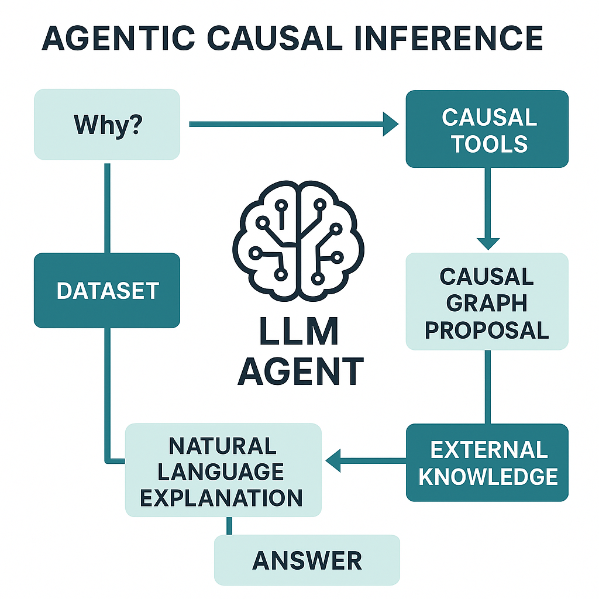

Backdrop: Machine Age of Sciences
Historians may one day mark the 2020s as the dawn of the machine age of sciences. Language models now draft proofs and experimental protocols; diffusion models fold proteins and sketch molecules before a chemist even picks up a pipette. Yet prediction is only half the story; scientists and businesses still need to answer the deeper question: why.
The plural on sciences is intentional. I want to emphasize the range of disciplines: physics, chemistry, biology, economics, sociology, computer science, data science, you name it. But in this post I would like to dedicate attention on causal inference.
Causal Inference and LLMs

Causal inference is such an important decision making tool in life and in business. However, to be an expert in this field takes years of mathematical and statistical training. LLMs on the other hand are easy to use, but they lack rigor when reasoning about causality.
Integrating causality into LLM agents addresses limitations on both sides:
- Pure causal methods demand strict assumptions and expert guidance.
- LLMs overflow with knowledge yet often mistake correlation for causation.
By wiring LLM‑based agents to specialized causal inference libraries, we can automate the causal workflow: discovery -> identification -> estimation -> refutation. The result is a new class of general‑purpose causal AI systems that parse tabular, time-series, and even multimodal data with human-like intuition and mathematical rigor.
Practically, that means the agent:
Thinks (via an LLM) about what causal graph should link your variables
Acts by writing Python: drawing DAGs, running ID algorithms, calling estimators, using libraries like
dowhy,econml,causaltune, etc.Reflects on the results, prompting itself with “Do my assumptions still hold?”
Iterates until a relevant answer surfaces, or it asks you for help.
If that sounds suspiciously like a data scientist teamate with infinite patience, you’ve got the gist.
10 lines of code for your first causal inference agent
To illustrate the idea, here is a minimal snippet to estimate the effect of a new coupon on revenue. This may actually be sufficient to get you a quick answer, if (a big if) the data is ready.
from langchain.agents import initialize_agent, Tool
from langchain.llms import OpenAI
from dowhy import CausalModel
from causaltune import AutoTune
def estimate_ate(df, treatment, outcome):
model = CausalModel(data=df, treatment=treatment, outcome=outcome)
ided = model.identify_effect()
best = AutoTune(model, df).best_estimator_
return model.estimate_effect(ided, method_name=best)
agent = initialize_agent(
llm=OpenAI(model_name="gpt-4o-mini"),
tools=[Tool.from_function(estimate_ate)],
agent_type="openai-tools"
)
agent.run("Estimate the uplift of coupon_v2 on weekly revenue")Time to look at some interesting papers and open source projects:
Single‑Agent Autonomous Pipelines
Causal Agent framework (2024):
- An LLM operates in a ReAct‑style loop with a suite of causal tools—e.g. CausalLearn for graph discovery and EconML for effect estimation.
- Given a dataset and a query (e.g. “Effect of X on Y?”) the agent automatically:
- explores variable correlations,
- hypothesizes causal links,
- proposes a causal graph,
- computes the quantitative effect of X on Y.
- Each step is backed by library outputs that the LLM interprets before deciding its next move.
The framework’s hierarchical breakdown (variable‑level, edge‑level, graph‑level, effect‑level) has produced expert‑level accuracy on a testing dataset with 1.3k questions, all while providing interpretable explanations.
- Causal-Copilot (2025)
- The agent chains 20 + causal tools, from discovery to hyper-parameter tuning, inside a single LLM loop.
- Works on both tabular and time-series data: prompts the user for a question, auto-selects the right discovery algorithm (e.g., NOTEARS, PC), tunes an estimator (DoubleML, CausalForest, IV), runs refuters, and returns an English report with effect size + CI.
- Achieves state-of-the-art graph accuracy and effect-estimation error across five public benchmarks, edging out both classic SCD baselines and earlier LLM agents.
- The agent chains 20 + causal tools, from discovery to hyper-parameter tuning, inside a single LLM loop.
Debating Multi‑Agent Systems for Causal Discovery
Single agents sometimes hallucinate; multi‑agent approaches aim to reduce errors through debate and consensus.
- Multi‑Agent Causal Discovery Using LLMs (2024) assigns dedicated LLM roles:
- Affirmative Debaters proposes a DAG using temporal cues and domain priors.
- Negative Debaters attacks the proposal by surfacing hidden confounders, incorrect temporal orderings, or omitted variables.
- Judges evaluate arguments and pick the most plausible structure.
- Coders materializes the agreed-upon algorithm, reruns it on the entire dataset, and emits the refined graph.
Experiments show these debating agents outperform both classical algorithms and single‑LLM prompts on datasets like Auto MPG, demonstrating that multiple specialized minds can yield more reliable causal graphs.
- Chain-of-Collaboration Prompting (2025) shows that giving sub-agents explicit roles (planner, verifier, critic) and letting them share scratch pads improves causal reasoning accuracy on CLADDER and Causal-Copilot QA tasks, cutting hallucinated edges by 35 % vs. single-prompt ReAct.
Toolbox Layer (AutoML & No‑Code Platforms)
Parallel to LLM research, we also see AutoML‑style causal platforms that automate model selection, tuning, and robustness checks.
- AutoCausality: part of the PyWhy ecosystem, using hyper‑parameter search and ensembling to choose the best estimator for a dataset.
- OpportunityFinder (Amazon 2023) offers code‑less causal studies for panel data cleaning, cohorting, and computing effects (plus sensitivity) end‑to‑end.
- Salesforce CausalAI Library consolidates discovery and inference methods, synthetic data generators, and a no‑code GUI, scaling to larger problems via optimized multiprocessing.
These toolkits enrich agentic workflows: an LLM planner can mix‑and‑match discovery, estimation, and AutoML selection modules without human intervention.
Evaluating Causal Inference Agents
How well do these causal inference agents perform? Here are some real or synthetic datasets and benchmarks.
For treatment‑effect estimation, the Lalonde job‑training study is a good place to start. It has real observational covariates paired with true RCT outcomes—to sanity‑check bias reduction. When larger, controlled replications are needed, you can use semi‑synthetic generators such as IHDP and the Twins dataset, whose perfect counterfactual comes from each twin’s paired outcome. The annual ACIC challenges extend this idea with dozens of high‑dimensional scenarios, while the 2025 RealCause generator allows people to create realistic Lalonde‑style benchmarks.
For longitudinal uplift studies, Amazon’s no‑code OpportunityFinder panels ship sample retail datasets ready for difference‑in‑differences.
When it comes to graph discovery methods, people tend to use classic datasets such as the 11‑node Sachs protein‑signaling map, a real wet‑lab interventions dataset. Bayesian‑network classics like Asia and ALARM remain quick smoke tests. Pairwise direction algorithms rely on the Tübingen cause–effect pairs, and larger time‑series graphs come from gene‑regulation contests such as DREAM4.
More recently we see language‑centric causal benchmarks. CLADDER has 10k natural language questions across Pearl’s ladder, while ACCESS asks agents to build abstract causal graphs over multimodal vignettes before answering why queries.
As to multimodal causal inference, CausalVQA is a benchmark for video question answering (VQA) that test models’ understanding of causality in the physical world.
Challenges and Mitigations
Going beyond the happy path to production is often not a smooth ride. Here are some of common challenges in my experience:
Data Quality and the Missing Confounders
Observational datasets rarely contain every variable that shapes a treatment–outcome relationship, so even a state‑of‑the‑art estimator can inherit hidden bias.
To mitigate, insert a human‑review checkpoint right after the agent proposes its first causal graph: domain experts eyeball edges and nominate missing covariates. The software then launches automatic robustness probes such as placebo tests, synthetic confounder injections, and other refutation modules shipped with DoWhy, to quantify how fragile the estimate is. Crucially, if any refutation fails, the planner LLM must stop, annotate the failure, and either revise the graph or escalate to a human reviewer; surfacing a shaky result as “tentative” is better than silently proceeding. Some teams also run a “data‑profiling agent” that scans fresh tables for covariate drift or sparsity and warns the planner before analysis starts.
Hallucinations and Over‑Confidence in Planner LLMs
LLM planners are persuasive storytellers; a well phrased chain‑of‑thought can make a shaky causal graph feel ironclad.
Multi‑agent debate is a good recipe to reduce hallucination: a second LLM plays devil’s advocate, and challenges the assumptions that make an estimate causal:
Placebo‑treatment test: replace the real treatment with a fake; any non‑zero effect flags hidden bias.
Synthetic‑confounder injection: add a random common cause and observe the ATE shift; big swings imply unmeasured confounding.
Overlap / positivity audit: verify that propensity scores span both arms; poor overlap triggers trimming or doubly robust methods.
Cross‑estimator consensus: pit a back‑door learner against an IV or front‑door estimator; disagreement above a threshold routes to human review.
Multi‑agent debate: affirmative and negative debaters contest every edge, a judge scores coherence.
If any probe fails, the planner either tightens assumptions and reruns discovery or clearly labels the conclusion “inconclusive, additional data needed.” Final reports must surface the point estimate plus confidence intervals, sensitivity ranges, and a pass/fail tally for each refuter, so stakeholders see magnitude and robustness.
Model‑Selection Over‑Fit and Cross‑Estimator Disagreement
Auto‑tuning libraries can explore dozens of learners and hyper‑parameters, sometimes over‑fitting small causal datasets, especially with flexible models like causal forests. In this case, AutoML learns noise instead of real signal.
Mitigations include nested cross‑validation inside AutoCausality or causaltune, and parsimony priors that penalize needless complexity. If resource allows, the agent should run at least two conceptually different estimators, e.g., a back‑door regression and an instrumental‑variable model, and flag any large divergence in effect size as a red‑flag for human review.
Computation Cost vs. Real‑Time Ambitions
A planner–solver split can still burn thousands of tokens and heavy compute if the planner explores many what‑if branches.
Production dashboards cache discovery and refutation outputs keyed by a DAG hash; if the graph hasn’t changed, the agent re‑uses prior results. Another recipe is distilling a heavy LLM planner into a small fine‑tuned local model covers day‑to‑day traffic, while the costly cloud model handles weekly deep dives.
Privacy and Governance
Sensitive data such as medical records, customer logs usually cannot leave a private cluster.
Hybrid deployments solve this: an on‑prem LLM handles data‑aware steps, while a redacted summary (no PII) is sent to a cloud model for high‑level planning. All explanations pass through a redaction layer before logging, and every causal report carries an audit trail plus role‑based access controls.
Conclusion
Causal inference is transitioning from a highly specialized skill to a widely accessible capability. That’s not putting anyone out of a job. It is freeing us to ask better questions. A couple of years ago, answering “what actually drives our north star metric?” meant a quarter-long project. Today, it may be weeks or even days. That’s not just a productivity gain. It is a fundamental change in how we can think about our businesses.